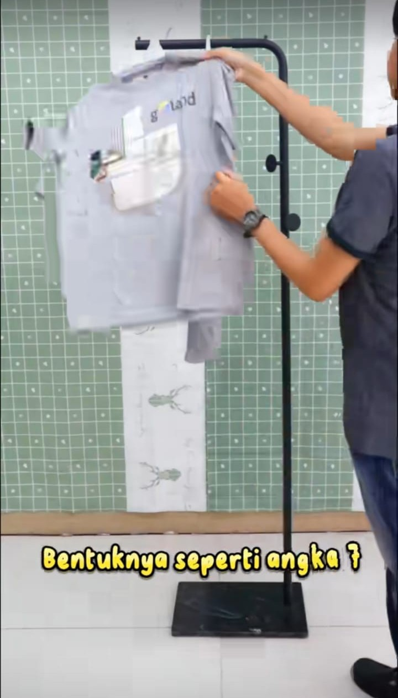
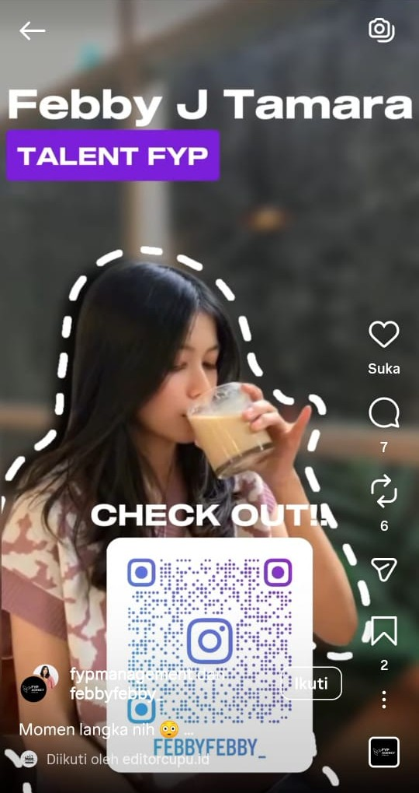
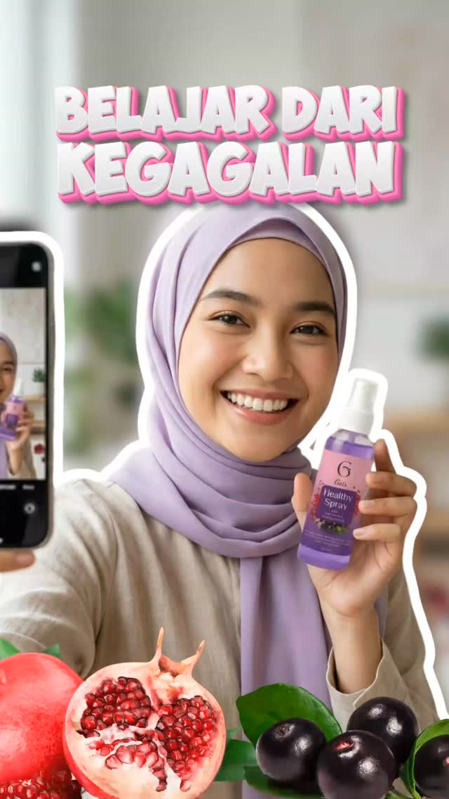
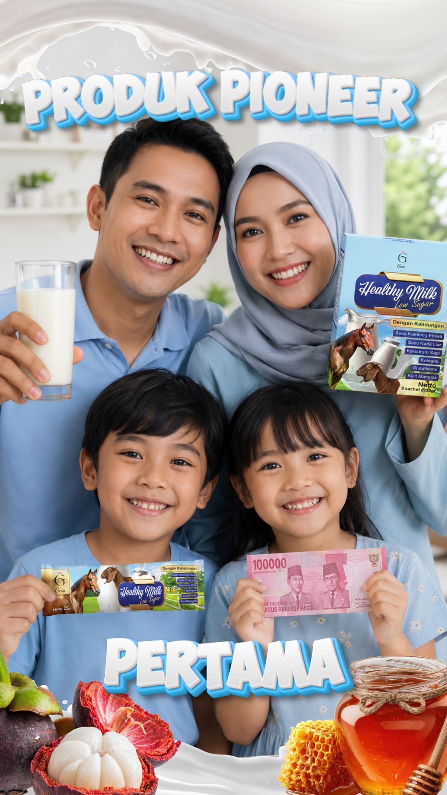

PT. Sinar Raja Indonesia
"Rangkaian konten promosi ini diproduksi menggunakan kamera DSLR dengan operasional teknis secara mandiri. Dalam proyek ini, saya berperan penuh mulai dari penulisan naskah, bertindak sebagai talent di depan layar, hingga proses editing akhir menggunakan software CapCut. Seluruh konten ini dipublikasikan melalui akun TikTok resmi Goland Indonesia."
CV. Lentera Anak Bangsa
"Koleksi video multimedia ini mencakup berbagai format sosial media yang direkam menggunakan standar kamera DSLR untuk kualitas visual maksimal. Proses editing diselesaikan secara efisien menggunakan CapCut untuk menghasilkan ritme konten yang dinamis dan relevan dengan audiens masa kini."
Youtube Podcast (FYP Media)
Instagram Reels (FYP Mgt x Prof. Raymond)

Influencer Content (FYP Mgt x KOL Talent)

Berita Instagram (FYP Media)
Konten Hiburan Instagram (FYP Agency)


PT. Lentera Diri Indonesia
"Proyek video konten kesehatan mental ini difokuskan pada pengolahan konten kreatif yang diedit menggunakan software CapCut. Keseluruhan visual disusun menggunakan footage-footage yang dikurasi dari internet, kemudian diramu kembali untuk menciptakan narasi video yang menarik dan sesuai dengan identitas brand."


PT. Bingchun Food Management
"Produksi konten untuk sektor F&B ini dioptimalkan menggunakan perangkat Handphone untuk menangkap momen yang lebih organik dan cepat. Seluruh proses editing dilakukan melalui CapCut, memastikan konten tetap tajam, informatif, dan menggugah selera."
PT. Pesona Anugerah Sukses
"Konten video ini dibuat dengan memanfaatkan teknologi AI untuk menghasilkan aset visual dan video produk, kemudian disempurnakan melalui editing di CapCut. Foto produk diambil sendiri menggunakan kamera smartphone, sedangkan elemen dekorasi, frame dan cover video dibuat secara mandiri menggunakan Canva."
Instagram Reels (GEIS Healthy)

